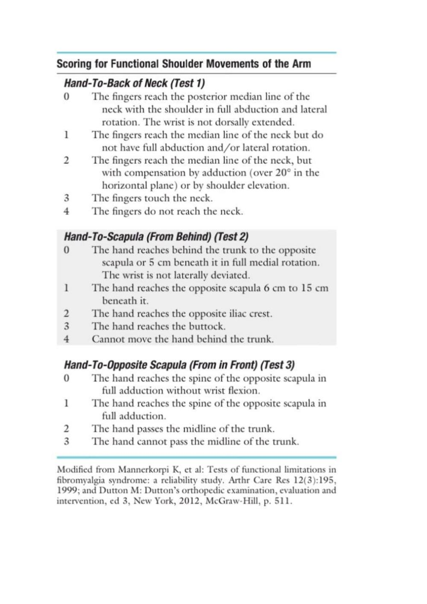
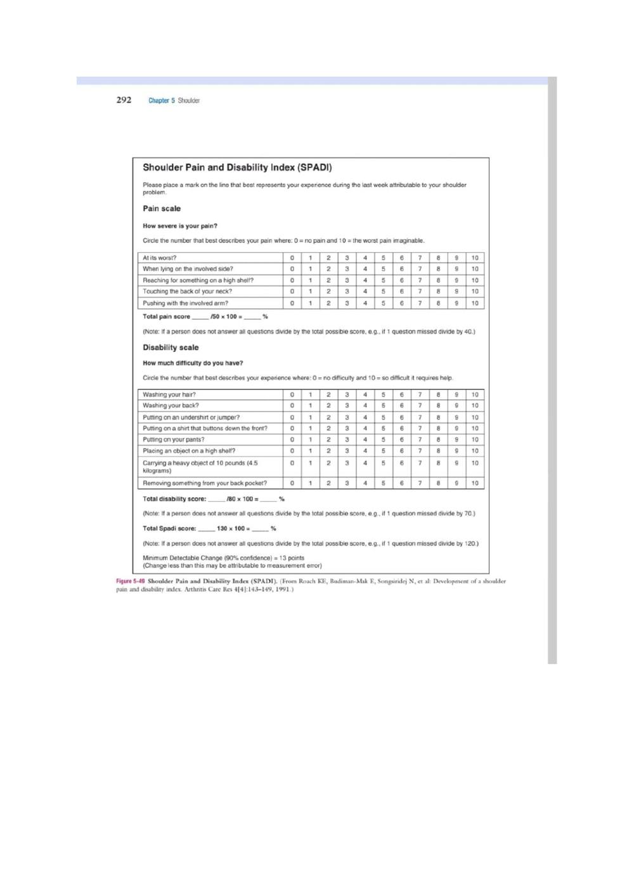
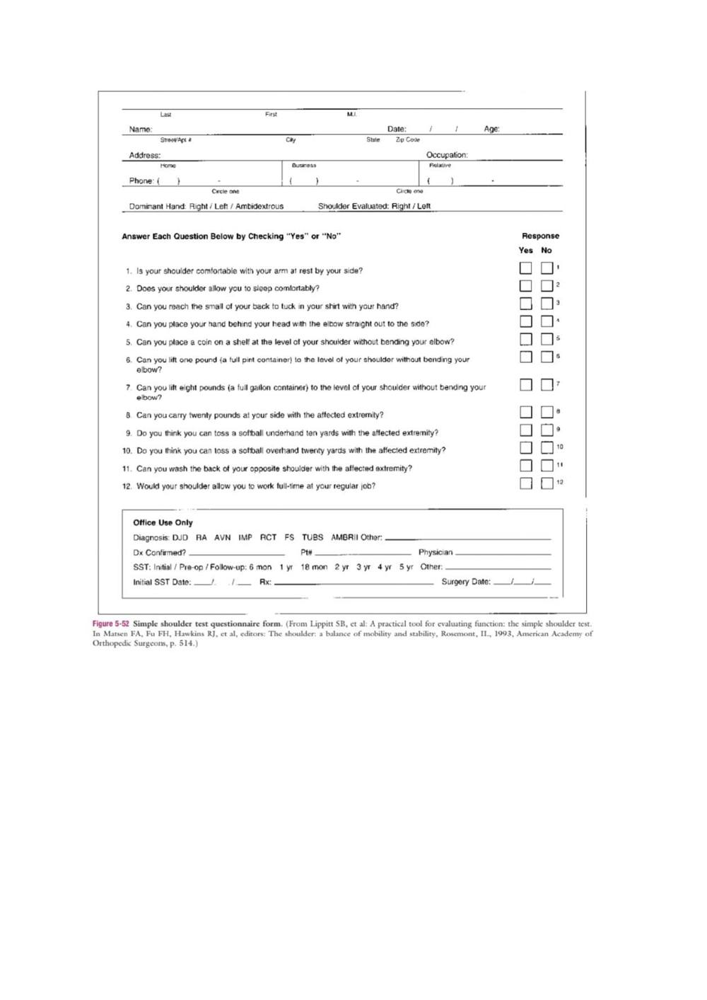
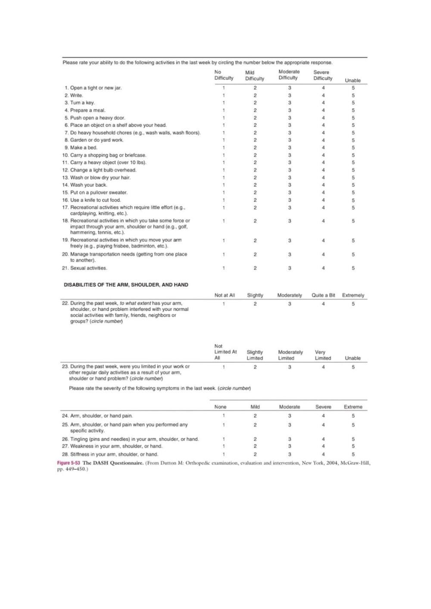

Screening of Shoulder
Faithful study notes transcribed from the Paper 3 MSK assessment compilation (based on David J. Magee, Orthopedic Physical Assessment, 6th ed., and companion material).
PAPER : 3
SCREENING THE SHOULDER
CONTENTS :
1.PATIENT HISTORY
2. OBSERVATION
3. EXAMINATION
4. DIAGNOSTIC IMAGING
5. REFERENCES
PATIENTS HISTORY : 1.What is the patient's age? 2.Does the patient support the upper limb in a protected position or hesitate to move it? 3.If there was an injury, what exactly was the mechanism of injury? Did the patient injure themself with a fall on out-stretched hand (FOOSH), which could indicate a fracture or dislocation of the glenohumeral joint? Did the patient fall on or receive a blow to the tip of the shoulder, or did the patient land on the elbow, driving the humerus up against the acromion? 4.Are there any movements or positions that cause the patient pain or symptoms? If so, which ones? r. A.How many episodes have there been in the last year? b. Was there an injury that precipitated this? c. What direction does the shoulder "go out" most times? d. Have you ever needed help getting the shoulder back into proper position within the joint?
5. What is the extent and behavior of the patient's pain? 6.Are there any activities that cause or increase the pain? 7. Do any positions relieve the pain? 8. What is the patient unable to do functionally? 9. How long has the problem bothered the patient? 10. Is there any indication of muscle spasm, deformity, bruising, wasting, paresthesia, or numbness? 11. Does the patient complain of weakness and heaviness in the limb after activity? Does the limb tire easily? These findings may indicate vascular involvement. Are there any venous symptoms, such as swelling or stiffness, that may extend all the way to the fingers? Are there any arterial symptoms, such as coolness or pallor in the upper limb? 12. Is there any indication of nerve injury? 13. Which hand is dominant?
OBSERVATION: When observing the shoulder, the examiner looks at the head, the cervical spine, the thorax (The patient must be suitably undressed so that the examiner can observe the bony and soft-tissue contours of both shoulders and determine whether they are normal and symmetric.
especially the posterior aspect), and the entire upper limb. The hand, for example, may show vasomotor changes that result from problems in the shoulder, including shiny skin, hair loss, swelling, and muscle atrophy. It is important to observe the patient as he or she removes clothes from the upper body and later replaces them. For example, does the patient undress the affected arm last or dress it first? This pattern indicates that the patient is limiting the movement of the arm as much as possible, signifying possible pathology. The patient's actions give some indication of functional restriction, pain, or weakness in the upper limb.
As part of the observation, noting whether the patient can assume a "neutral pelvis" position is important, because an abnormal pelvic position can lead to an abnormal scapulothoracic, glenohumeral, and cervical spine position and abnormal kinematics in these joints. In addition, kinematics plays a role in how much force can be generated by the lower quadrant that contributes to an activity. For example, about 50% of the force of throwing is normally generated by the lower quadrant. Three questions must be asked by the examiner related to the "neutral pelvic" position: 1. Can the patient get into the "neutral pelvis" position? 2. Can the patient hold the static "neutral pelvis" position while doing distal dynamic movement (e.g., shoulder movements)?
3. Can the patient control a dynamic "neutral pelvis" while doing dynamic shoulder movements? If the answer to any of the questions is negative, the examiner has to consider including the pelvis in the treatment plan for the shoulder.
Anterior View
When looking at the patient from the anterior view , the examiner should begin by ensuring that the head and neck are in the midline of the body and observing their relation to the shoulders. A forward head posture is often associated with rounded shoulders, a medially rotated humerus and a protracted scapula resulting in the humeral head translating anteriorly, a tight posterior capsule, tightness of the pectoral, upper trapezius, and levator scapulae muscles, and weakness of the lower scapular stabilizers and deep neck flexors. While observing the shoulder, the examiner should look for the possibility of a step deformity .
Such a deformity may be caused by an acromioclavicular dislocation with the distal end of the clavicle lying superior to the acromion process. Seen at rest, a step deformity indicates both the acromioclavicular and coracoclavicular ligaments have been torn. The deformity may be accentuated by asking the patient to horizontally adduct the arm or to medially rotate the shoulder and bring the hand up the back as high as possible. Occasionally, swelling is evident anterior to the acromioclavicular joint. This is called the Fountain sign and indicates that degeneration has caused communication between the acromioclavicular joint and swollen subacromial bursa underneath.
If a sulcus deformity appears when traction is applied to the arm, it may be caused by multidirectional instability or loss of muscle control due to nerve injury or a stroke, leading to inferior subluxation of the glenohumeral joint. This deformity is lateral to the acromion and should not be confused with a step deformity. This is also referred to as a sulcus sign because of the appearance of a sulcus or groove below the acromion process. Flattening of the normally round deltoid muscle area may indicate an anterior dislocation of the glenohumeral joint or paralysis of the deltoid muscle . With an anterior dislocation, note also how the arm is held abducted because of the location of the humeral head below the glenoid.
If the examiner palpated in the axilla, he or she would feel the head of the humerus. The examiner should note any abnormal bumps or malalignment in the bones that may indicate past injury, such as a healed fracture of the clavicle. In most people, the dominant side is lower than the nondominant side. This difference may be caused by the extra use of the dominant side, which stretches the ligaments, joint capsules, and muscles, allowing the arm to sag slightly. If the patient is protective of the shoulder, however, it may appear that the injured shoulder, whether dominant or nondominant, is higher than the normal side.
The examiner notes whether the patient is able to assume the normal functional position for the shoulder, which is in the scapular plane with 60° of abduction and the arm in neutral or no rotation. In this position, or with the arm abducted to 90°, rupture or congenital absence of the pectoralis major may be evident. Rupture of the pectoralis major is often accompanied by a tearing sensation and pop along with weakness, painful limitation of movement, and ecchymosis. If the patient's arm is medially rotated from this position to bring the hand into midline, the biceps tendon is forced against the lesser tuberosity of the medial wall of the bicipital (intertubercular) groove.
If this position is maintained for long periods, there may be increased wear of the biceps tendon, which can lead to bicipital tendinitis or paratenonitis. If the arm is horizontally adducted while it is medially rotated, anterior pain indicates impingement symptoms (Hawkins-Kennedy ). The width and depth of the bicipital groove may vary , possibly leading to problems if the shoulder is overused. Especially wide or deep grooves lead to the greatest problems. The wide grooves tend to allow the tendon too much lateral movement, leading to inflammation of the paratenon (paratenonitis) the deep grooves tend to be too narrow, compressing the tendon, especially if it becomes inflammed.
Posterior View
When viewing the patient from behind, the examiner again notes bony and soft-tissue contours and body alignment especially scapular malpositioning. The scapula plays a major role in the shoulder. First, it provides an origin for the rotator cuff muscles as well as the biceps and triceps muscles and, therefore, provides a stable dynamic base from which these muscles act. Second, it maintains the glenohumeral alignment within physiological limits that facilitates congruency and concavity compression capability at the glenohumeral joint through the full ROM. Third, the attachment of the acromion to the clavicle leads to scapular upward rotation and posterior tilt to allow maximum arm elevation.
Finally, the scapula facilitates force transfer from the shoulder to the core (and vice versa) acting like a funnel for efficient energy transfer. This transfer of forces can involve the whole kinetic chain, and by using this "chain" correctly, the patient can decrease the stresses to the shoulder itself. Atrophy of the upper trapezius may indicate spinal accessory nerve palsy, whereas atrophy of supraspinatus or infraspinatus may indicate supraspinous nerve palsy. The spines of the scapulae, which begin medially at the level of the third thoracic (T3) vertebra, should be at the same angle. The scapula itself should extend from the T2 or T3 spinous process to the T7 or T9 spinous process of the thoracic vertebrae.
Sobush and associates developed a method for measuring the scapular position called the Lennie test.In this test, they measured from the spinous processes horizontally to three scapular positions: the medial aspect of the most superior point (superior angle), the root of the spine of the scapula, and the inferior angle. If the scapula is sitting lower than normal against the chest wall, the superior medial border of the scapula may "washboard" over the ribs, causing a snapping or clunking sound (snapping scapula) during abduction and adduction. Other causes of snapping may be spinal kyphosis, rounded shoulders, forward tipped scapula, and a chin poking posture. The inferior angles of the scapulae should be equidistant from the spine.
Causes of Scapular Dyskinesia
BONY
• Thoracic kyphosis • Clavicular fracture nonunion • Clavicular fracture malunion
JOINT
• Acromioclavicular instability • Acromioclavicular arthrosis • Glenohumeral internal derangement
NEUROLOGICAL
• Cervical radiculopathy • Long thoracic nerve palsy • Spinal accessory nerve palsy
SOFT TISSUE
• Intrinsic muscle pathology (1°, 2°, or 3° strain) • Hypomobility (e.g., short head of biceps, pectoralis minor) • Glenohumeral internal rotation deficit (GIRD) • Altered muscle activation patterns • Altered muscle force-couple action Scapular dyskinesia, or scapular dysfunction, although not an injury itself, can lead to altered glenohumeral joint angulation, abnormal stress on shoulder ligaments, altered subacromial space, overload of the acromioclavicular joint, increased strain on the scapular stabilizing muscles, altered muscle activation, and modified arm position and motion. These alterations are commonly the result of an excessively protracted scapula during arm motion. Kibler, et al.
divided scapular dysfunction or dyskinesia into four movement patterns. Type I shows the inferior medial border being prominent at rest and the inferior angle tilts dorsally with movement (scapular tilt), while the acromion tilts anteriorly over the top of the thorax. It may be seen at rest or during concentric or eccentric movement. If the inferior border tilts away from the chest wall, it may indicate the presence of weak muscles (e.g., lower trapezius, latissimus dorsi, serratus anterior) or a tight pectoralis minor or major pulling, or tilting, the scapula forward from above.
Type II is the classic winging of the scapula with the whole medial border of the scapula being prominent and lifting away from the posterior chest wall both statically and dynamically . It too may be seen at rest or during eccentric or concentric movements. This deformity may indicate the presence of a superior labrum anterior to posterior (SLAP) to the biceps lesion; weakness of the serratus anterior; rhomboids; lower, middle, and upper trapezius; a long thoracic nerve problem; or tight humeral rotators. Type III is illustrated by the superior border of the scapula being elevated at rest and during movement; a shoulder shrug initiates the movement, and there is minimal winging.
This deformity is seen with active movement and may result from overactivity of the levator scapula and upper trapezius along with imbalance of the upper and lower trapezius force couple. It is associated with impingement and rotator cuff lesions. Type IV pattern, both scapulae are symmetrical at rest and during motion; they rotate symmetrically upward with the inferior angles rotating laterally away from midline (rotary winging). It is seen during movement and may indicate that the scapular control muscles are not stabilizing the scapula. Kibler, et al. advocated a dynamic scapular motion test to test for scapular dyskinesia.
The patient, while holding a 3 lb to 5 lb (1.4 kg to 2.3 kg) weight in the hand, is asked to fully elevate and lower the arms three to five times into forward flexion or scaption. The examiner watches for prominence of the medial border of the scapula (classic winging), which indicates a positive test. Primary scapular winging implies the winging is the result of muscle weakness of one of the scapular muscle stabilizers that, in turn, disrupts the normal muscle force couple balance of the scapulothoracic complex. Secondary scapular winging implies that the normal movement of the scapula is altered because of pathology in the glenohumeral joint.
Dynamic scapular winging (i.e., winging with movement) may be caused by a lesion of the long thoracic nerve affecting serratus anterior, trapezius palsy (spinal accessory nerve), rhomboid weakness, multidirectional instability, voluntary action, or a painful shoulder resulting in splinting of the glenohumeral joint, which in turn causes reverse scapulohumeral rhythm. This splinting of the glenohumeral joint leads to reverse origin-insertion of the rotator cuff muscles so that instead of moving the humerus as they normally would, they work in reverse fashion and move the scapula. Commonly, with pathology, the scapular control muscles are weak and cannot counteract this action, resulting in protraction of the scapula and dynamic winging.
The two other common causes of dynamic winging-long thoracic nerve palsy and spinal accessory nerve palsy-cause different scapula positioning and different winging patterns. Spinal accessory nerve palsy causes the scapula to depress and move laterally with the inferior angle rotated laterally. If the trapezius is weak or paralyzed, the winging of the scapula occurs before 90° abduction, and there is little winging on forward flexion. Long thoracic nerve palsy causes the scapula to elevate and move medially with the inferior angle rotating medially . If the serratus anterior is weak or paralyzed, the winging of the scapula occurs on abduction and forward flexion (especially with a "punch out" forward against resistance) .
Radiculopathies at C3, C4 (trapezius), C5 (rhomboids), and C7 (serratus anterior, rhomboids) can also cause winging. Static winging (i.e., winging occurring at rest) is usually caused by a structural deformity of the scapula, clavicle, spine, or ribs. Sprengel's deformity, which is a developmental condition leading to a high or undescended scapula is rare, but it is the most common congenital deformity of the shoulder complex. With this deformity, the scapular muscles are poorly developed or are replaced by a fibrous band. The condition may be unilateral or bilateral, and the range of the shoulder abduction decreases, leading to decreased shoulder function. Usually, the scapula is smaller than normal and is medially rotated.
It may be associated with other anomalies (e.g., scoliosis, Klippel-Feil syndrome, rib anomalies). The shoulder muscles may be accentuated by having the patient place the hands on the hips and contract the muscles. The examiner should check closely for wasting in the supraspinatus and infraspinatus muscles (suprascapular nerve palsy), the serratus anterior muscle (long thoracic nerve palsy), and the trapezius muscle (spinal accessory nerve palsy), all of which can lead to winging of the scapula.
EXAMINATION
Because assessment of the shoulder may include an assessment of the cervical spine, the examination can be an extensive one. If the examiner has any doubt as to the location of the lesion, a cervical spine assessment should be performed. In addition, the examiner must remember that the arm, of which the shoulder is an integral part, may act as an open kinetic chain when the hand is free to move, or as a closed kinetic chain when the hand is fixed to some relatively immovable object.
For example, scapular instability may be evident in closed kinetic chain when the arm is fixed and the rotator cuff muscles work in reverse order (reverse origin insertion; for example, the insertion of the muscles into the humerus becomes the stable part because the arm is fixed, whereas the scapula becomes the mobile part and is more likely to move) . It may also be evident in open kinetic chain, especially during highspeed movements when the scapula needs to be stabilized (e.g., when hitting a ball) or when the scapular muscles should be working eccentrically to slow or stop a movement (i.e., they are unable to do so because of weakness).
In open kinetic chain, the scapula acts as the base or origin of the muscles, whereas the insertion into the humerus is more mobile. Knowledge of muscle balance and muscle force couples becomes imperative in determining a diagnosis. For example, the legs, pelvis, and trunk act as force generators, whereas the shoulder acts as a funnel and force regulator with the arm acting as the force delivery system. These kinetic chains and the intricate and complex interplay of the components of the kinetic chain have different effects on the shoulder. Eating, reaching, and dressing are considered open kinetic chain activities, whereas crutch walking and pushing up from a chair are considered closed kinetic chain movements.
As with any assessment, the examiner is comparing one side of the body with the other. This comparison is necessary because of individual differences among normal people.
Active Movements
Active Movements of the Shoulder Complex • Elevation through abduction (170° to 180°) • Elevation through forward flexion (160° to 180°) • Elevation through the plane of the scapula (170° to 180°) • Lateral (external) rotation (80° to 90°) • Medial (internal) rotation (60° to 100°) • Extension (50° to 60°) • Adduction (50° to 75°) • Horizontal adduction/abduction (cross-flexion/cross-extension; 130°) • Circumduction (200°) • Scapular protraction • Scapular retraction • Combined movements (if necessary) • Repetitive movements (if necessary) • Sustained positions (if necessary) The first movements to be examined are the active movements.
These movements are usually done in such a way that the painful movements are performed last so that pain does not carry over to the next movement. It is important to remember that shoulder movements are a combination of not only glenohumeral, scapulothoracic, acromioclavicular and sternoclavicular movements, but maximum end range movement may also involve the thoracic spine and ribs. Thus, being able to differentiate between scapular movement and glenohumeral movements as well as these other movements when watching active movements is essential, because scapular movement often compensates for restricted glenohumeral movement leading to weak and often lengthened scapular control muscles.
An understanding of the force couples acting on the shoulder complex and the necessity of balancing the muscle strength and endurance of these muscles is especially important when assessing the shoulder. Force couples are groups of counteracting muscles that show obvious action when a movement is loaded or done quickly. With a particular movement, one group of muscles (the agonists) acts concentrically, whereas the other group (the antagonists) acts eccentrically in a controlled, harmonized fashion to produce smooth movement. these muscles may work by co-contraction or co-activation to provide a stabilizing effect and joint control. Active elevation through abduction is normally 170° to 180°.
As the patient elevates the upper extremity by abducting the shoulder, the examiner should note whether a painful arc is present . A painful arc may be caused by subacromial bursitis, calcium deposits, a peritenonitis or tendinosis of the rotator cuff muscles, or most commonly by an unstable scapula. The pain results from pinching of inflamed or tender structures under the acromion process and the coracoacromial ligament. Initially, the structures are not pinched under the acromion process, so the patient is able to abduct the arm 45° to 60° with little difficulty.
As the patient abducts further (60° to 120°), the structures (e.g., subacromial bursa, rotator cuff tendon insertions, especially supraspinatus) become pinched, and the patient is often unable to abduct fully because of pain. If full abduction is possible, however, the pain diminishes after approximately 120° because the pinched soft tissues have passed under the acromion process and are no longer being pinched. Often, the pain is greater going up (against gravity) than coming down, and there is more pain on active abduction than on passive abduction. If the movement is very painful, the patient often elevates the arm through forward flexion or hikes the shoulder using upper trapezius and levator scapulae in an attempt to decrease the pain.
In some cases, retracting the scapula and holding it retracted slightly enlarges the space under the coracoacromial space, which may decrease pain. A second painful arc in the shoulder may be seen during the same abduction movement. This painful arc occurs toward the end of abduction, in the last 10° to 20° of elevation, and is caused by pathology in the acromioclavicular joint or by a positive impingement test. In the case of the acromioclavicular joint lesion, the pain tends to be localized to the joint. With the impingement syndrome, the pain is usually found in the anterior shoulder region. The arc of pain may be present also during elevation through forward flexion and scaption, although the pain is usually less severe on these movements.
The interconnection of the subacromial, subcoracoid, and subscapularis bursae with each other and with the glenohumeral joint capsule often produces a broad area of signs and symptoms, which may result in a painful arc. When examining the movement of elevation through abduction, the examiner must take time to observe scapulohumeral rhythm of the shoulder complex , both anteriorly and posteriorly.
That is, during 180° of abduction, there is roughly a 2:1 ratio of movement of the humerus to the scapula with 120° of movement occurring at the glenohumeral joint and 60° at the scapulothoracic joint; one should be aware, however, that there is a great deal of variability among individuals and may depend on the speed of movement, and authors do not totally agree on the exact amounts of each movement. During this total simultaneous movement at the four joints, there are three phases; the reader should understand that others will give values of the amount of each movement that vary from those noted here.
1.In the first phase of 30° of elevation through abduction, the scapula is said to be "setting." This setting phase means that the scapula may rotate slightly in, rotate slightly out, or not move at all. Thus, there is no 2:1 ratio of movement during this phase. The angle between the scapular spine and the clavicle may also increase up to 5° by elevating at the sternoclavicular and acromioclavicular joints,but this depends on whether the scapula moves during this phase. The clavicle rotates minimally during this stage. 2. During the next 60° of elevation (second phase), the scapula rotates upward (inferior angle moves out) about 20°, and the humerus elevates 40° with minimal protraction or elevation of the scapula.
Thus, there is a 2:1 ratio of scapulohumeral movement. During phase 2, the clavicle elevates because of the scapular rotation, and begins to posteriorly rotate. During the second and third phase, the rotation of the scapula (total: 60°) is possible because there is 20° of motion at the acromioclavicular joint and 40° at the sternoclavicular joint. 3. During the final 90° of motion (third phase), the 2:1 ratio of scapulohumeral movement continues, and the angle between the scapular spine and the clavicle increases an additional 10°. Thus, the scapula continues to rotate and now begins to elevate. The amount of protraction continues to be minimal when the abduction movement is performed.
It is in this stage that the clavicle rotates posteriorly 30° to 50° on a long axis and elevates up to a further 15°.7 In reality, the clavicle only rotates 5° to 8° relative to the acromion because of scapular rotation. Also, during this final stage, the humerus finishes its lateral rotation to 90° so that the greater tuberosity of the humerus avoids the acromion process. In the unstable shoulder, scapulohumeral rhythm is commonly altered because of incorrect dynamic functioning of the scapular or humeral stabilizers or both. This may be related to incorrect arthrokinematics at the glenohumeral joint, and so the examiner must be sure to check for normal joint play and the presence of hypomobile structures that could lead to these abnormal motions.
It is important to watch the movement, especially of the scapula, in both the ascending and descending phases of abduction. Commonly weakness of the scapular control muscles is more evident during descent, and an instability jog, hitch, or jump may occur when the patient loses control of the scapula. The speed of abduction may also have an effect on the ratio. Therefore, it is more important to look for asymmetry between the injured and the good sides than to be concerned with the actual degrees of movement occurring at each joint.
That being said, if the clavicle does not rotate and elevate, elevation through abduction at the glenohumeral joint is limited to 120°.82 If the glenohumeral joint does not move, elevation through abduction is limited to 60°, which occurs totally in the scapulothoracic joint. If there is no lateral rotation of the humerus during abduction, the total movement available is 120°, 60° of which occurs at the glenohumeral joint and 60° of which occurs at the scapulothoracic articulation. The normal end of ROM is reached when there is contact of a surgical neck of humerus with the acromion process. Reverse scapulohumeral rhythm means that the scapula moves more than the humerus. This occurs in conditions like the frozen shoulder.
The patient appears to "hike" the entire shoulder complex rather than produce a smooth coordinated abduction movement. Active elevation through forward flexion is normally 160° to 180°, and at the extreme of the ROM, the arm is in the same position as for active elevation through abduction. Active elevation (170° to 180°) through the plane of the scapula (30° to 45° of forward flexion), termed scaption, is the most natural and functional motion of elevation. Elevation in this position is sometimes called neutral elevation. The exact angle is determined by the contour of the chest wall on which the scapula rests.
Often, movement into elevation is less painful in this position than elevation through abduction in which the glenohumeral joint is actually in extension, or elevation in forward flexion. Movement in the plane of the scapula puts less stress on the capsule and surrounding musculature and is the position in which most of the functions of daily activity are commonly performed. Strength testing in this plane also gives higher values. Patients with weakness spontaneously choose this plane when elevating the arm. During scaption elevation, scapulohumeral rhythm is similar to hat of abduction although there is greater individual variability. The three phases are similar, but there are differences.
For example, in scaption elevation, there is little or no lateral rotation of the head of the humerus in the third phase. Also, the total elevation in scaption is about 170° with scapular rotation being about 65° and humeral abduction about 105°; although there is slightly more scapular rotation in scaption, this difference again may result from individual variation. More scapular protraction is likely to occur in scaption elevation, especially in elevation through forward flexion. Active lateral rotation is normally 80° to 90° but may be greater in some athletes, such as gymnasts and baseball pitchers.
Care must be taken when applying overpressure with this movement, because it could lead to anterior dislocation of the glenohumeral joint, especially in those with recurrent dislocation problems. If glenohumeral lateral rotation is limited, the patient will compensate by retracting the scapula. To minimize scapular movement, lateral rotation may be measured in supine or side lying with the arm abducted 90°. Wilk, et al. have recommended that rotation be tested in supine lying with the arm abducted to 90° and the scapula stabilized to increase reliability. Active medial rotation is normally 60° to 100°. This is usually assessed by measuring the height of the "hitchhiking" thumb (thumb in extension) reaching up the patient's back .
Common reference points include the greater trochanter, buttock, waist, and spinous processes with T5 to T10 representing the normal degree of medial rotation. When doing the test in this fashion, the examiner must be aware that, in reality, the range measured is not that of the glenohumeral joint alone. In fact, much of the range is gained by winging the scapula. In the presence of tight medial glenohumeral motion, greater winging and protraction of the scapula occurs. Doing the rotation testing in 90° abduction (if the patient can achieve this position) will give a clearer indication of true glenohumeral joint medial and lateral rotation, which are measured when the scapula starts to move .
If rotation is tested in 90° abduction and crepitus is present on rotation, it indicates abrasion of torn tendon margins against the coracoacromial arch and is called the "abrasion sign." It is important to compare medial and lateral rotation, especially in active people who use their dominant arm at extremes of motion and under high load situations. Normally, any gain in lateral rotation is commonly accompanied by a comparable loss in medial rotation. Thus, it is important to note any glenohumeral internal (medial) rotation deficit (GIRD) which is the difference in medial rotation between the patient's two shoulders.
Small changes in GIRD can lead to biomechanical changes in passive glenohumeral motion.100 For example, the loss of medial rotation may be due to contracture of the posteroinferior capsule, which in turn can lead to a SLAP lesion. Normally, the difference should be within 20° or 10% of total rotation of the opposite arm. This may also be compared with the glenohumeral external (lateral) rotation gain (GERG) If the GIRD/GERG ratio is greater than 1, the patient will probably develop shoulder problems.
In the unstable shoulder, it has been advocated that the examiner do the dynamic rotary stability test (DRST), which assesses the rotator cuff's ability to maintain the humeral head in the glenoid through the arc of rotation (i.e., the ability of the rotator cuff to maintain arthrokinematic control). The patient is positioned in sitting or lying with the arm abducted to about 90° and the elbow flexed to about 90°. The examiner controls the patient's arm position with one hand while the other hand palpates the position of the humerus in the glenoid (it is best to palpate the joint line). The examiner places the patient's glenohumeral joint in different positions of flexion and abduction close to the position where the patient has symptoms.
The patient is asked to do an isometric contraction against light to moderate resistance then isotonically (concentrically or eccentrically [eccentric break] depending on what movements caused the patient's symptoms). While the patient does the contraction, the examiner palpates the joint line to see if and when arthrokinematic control is lost (i.e., does the humeral head slip or translate?). During the test, the scapula should be stable and not translate. If the scapula protracts during the test, it indicates lack of scapular control.
Doing the Dynamic Relocation Test (DRT), which tests the the patient's arm position with one hand while the other hand palpates the position of the humerus in the glenoid (it is best to palpate the joint line).The examiner places the patient's glenohumeral joint in different positions of flexion and abduction close to the position where the patient has symptoms. The patient is asked to do an isometric contraction against light to moderate resistance then isotonically (concentrically or eccentrically [eccentric break] depending on what movements caused the patient's symptoms). While the patient does the contraction, the examiner palpates the joint line to see if and when arthrokinematic control is lost (i.e., does the humeral head slip or translate?).
During the test, the scapula should be stable and not translate. If the scapula protracts during the test, it indicates lack of scapular control. This tests the abduction, or cross-extension, is approximately 45°. After abducting the arm to 90°, the patient moves the straight arm in a backward direction. In both cases, the examiner should watch the relative amount of scapular movement between the normal and pathological sides. If movement is limited in the glenohumeral joint, greater scapular movement occurs. Circumduction is normally approximately 200° and involves taking the arm in a circle in the vertical plane.
In addition to the aforementioned movements, several of which involve movement of the humerus and scapula, the patient should actively perform two distinct movements of the scapulae: scapular retraction and scapular protraction. For scapular retraction, the examiner asks the patient to squeeze the shoulder blades (scapula) together. Normally, the medial borders of the scapula remain parallel to the spine but move toward the spine with the soft tissue bunching up between the scapula. Ideally, the patient should be able to do this movement without excessive contraction of the upper trapezius muscles.
For scapular protraction, the patient tries to bring the shoulders together anteriorly so that the scapula move away from midline with the inferior angle of the scapula commonly moving laterally more than the superior angle so that some lateral rotation of the inferior angle occurs . This protraction/retraction cycle may cause a clicking or snapping near the inferior angle or supramedial corner, which is sometimes called a snapping scapula, caused by the scapula rubbing over the underlying ribs. Injury to the individual muscles can affect several movements. For example, if the serratus anterior muscle is weak or paralyzed, the scapula "wings" away from the thorax on its medial border. It also assists upper rotation of the scapula during abduction.
Injury to the muscle or its nerve may therefore limit abduction. In fact, loss or weakness of serratus anterior affects all shoulder movements because scapular stabilization is lost. Similarly, weakness of the lower trapezius muscle can alter scapular mechanics resulting in anterior secondary impingement. When observing these movements, the examiner may ask the patient to perform them in combination, especially if the patient history has indicated that combined movements are bothersome. For example, Apley's scratch test combines medial rotation with adduction and lateral rotation with abduction . This method may decrease the time required to do the assessment.
In addition, by having the patient do the combined movements, the examiner gains some idea of the functional capacity of the patient. For example, abduction combined with flexion and lateral rotation or adduction combined with extension and medial rotation is needed to comb the hair, to zip a back zipper, or to reach for a wallet in a back pocket. However, the examiner must take care to notice which movements are restricted and which ones are not, because several movements are performed at the same time. Some examiners prefer doing the same motion in both arms at the same time: neck reach (abduction, flexion, and lateral rotation at the glenohumeral joint) and back reach (adduction, extension, and medial rotation at the glenohumeral joint).
Some believe this method makes comparison easier . Often, the dominant shoulder shows greater restriction than the nondominant shoulder, even in normal people. An exception would be patients who continually use their arms at the extremes of motion (e.g., baseball pitchers). Because of the extra ROM developed over time doing the activity, the dominant arm may show greater ROM. However, the examiner must always be aware that shoulder movements include movements of the scapula and clavicle as well as the glenohumeral joint and that many of the perceived glenohumeral joint problems are, in reality, scapular muscle control problems, which may secondarily lead to glenohumeral joint problems, especially in people under 40 years of age.
If, in the history, the patient has complained that shoulder movements in certain postures are painful or that sustained or repetitive movements increase symptoms, the examiner should consider having the patient hold a sustained arm position (10 to 60 seconds) or do the movements repetitively (ten to twenty repetitions). Ideally, these repeated movements should be performed at the speed and with the load that the patient was using when the symptoms were elicited. Thus, the volleyball player should do the spiking motion in which he or she jumps up to hit the imaginary ball.
Capsular tightness, although commonly tested during passive movement, can affect active movement by limiting some or all movements in the glenohumeral joint with compensating excessive movement of the scapula. Just as a frozen shoulder can affect all movements, selected tightness due to particular pathologies may affect only part of the capsule. For example, with anterior shoulder instability, posterior capsular tightness is a common finding combined with weak lower trapezius and serratus anterior muscles. Likewise, muscle tightness can affect both active and passive movement.
For example, with anterior shoulder instability, the following muscles may be found to be tight: subscapularis, pectoralis minor and major, latissimus dorsi, upper trapezius, levator scapulae, sternocleidomastoid, scalenes, and rectus capitus. Weak muscles include serratus anterior, middle and lower trapezius, infraspinatus, teres minor, posterior deltoid, rhomboids, longus colli, and longus capitus. The biceps tendon does not move in the bicipital groove during movement; rather, the humerus moves over the fixed tendon. From adduction to full elevation of abduction, a given point in the groove moves along the tendon at least 4 cm.
If the examiner wants to keep excursion of the bicipital groove along the biceps tendon to a minimum, the arm should be elevated with the humerus in medial rotation; elevating the arm with the humerus laterally rotated causes maximum excursion of the bicipital groove along the biceps tendon. Patients who have deltoid or supraspinatus pathology sometimes use this laterally rotated position because lateral rotation allows the biceps tendon to be used as a shoulder abductor in a "cheating" movement. As the patient does the various movements, the examiner watches to see whether the components of the shoulder complex move in normal, coordinated sequence and whether the patient exhibits any apprehension when doing a movement.
With anterior instability of the shoulder, the shoulder girdle often droops, and excessive scapulothoracic movement may occur on abduction. With posterior instability, horizontal adduction (crossflexion) may cause excessive scapulothoracic movement. Any apprehension on movement suggests the possibility of instability. The examiner should also watch for winging of the scapula on active movements.
Winging of the medial border of the scapula indicates injury to the serratus anterior muscle or the long thoracic nerve; rotary winging of the scapula or scapular tilt indicates upper trapezius pathology or injury to the spinal accessory nerve (cranial nerve XI Scapular tilt (inferior angle of scapula moves away from rib cage) may also be caused by weak lower trapezius or a tight pectoralis minor. In some cases, it may be necessary to load the appropriate muscle isometrically (hold the contraction for 10 to 15 seconds) to demonstrate abnormal scapular stability. It has been reported that application of a resistance to adduction at 30° and at 60° of shoulder abduction is the best way to show scapular winging.
Eccentric loading of the shoulder in different positions, especially into horizontal adduction, may also demonstrate winging or loss of scapular control. Weakness of the scapular control muscles often leads to overactivity of the rotator cuff and biceps muscle leading to overuse pathology in those structures. If the scapula appears to wing, the examiner asks the patient to forward flex the shoulder to 90°. The examiner then pushes the straight arm toward the patient's body while the patient resists. If there is weakness of the upper or lower trapezius muscle, the serratus anterior muscle, or the nerves supplying these muscles, their inability to contract will cause the scapula to wing.
Another way to test winging of the scapula is to have the patient stand and lean against the wall. The examiner then asks the patient to do a pushup away from the wall while the examiner watches for winging. Similarly, asking the patient to do a floor pushup may demonstrate this winging The patient should be tested in a relaxed starting position and be asked to do the pushup. Sometimes the winging is visible at rest only (static winging), sometimes during rest and activity, and sometimes only with the activity (dynamic winging). Injury to other nerves in the shoulder region must not be overlooked .
As previously mentioned, damage to the suprascapular nerve may affect both the supraspinatus and infraspinatus muscles, or it may affect only the infraspinatus, depending on where the pathology lies , whereas injury to the musculocutaneous nerve can lead to paralysis of the coracobrachialis, biceps, and brachialis muscles. These changes affect elbow flexion and supination and forward flexion of the shoulder. There is also a loss of the biceps reflex. Injury to the axillary (circumflex) nerve leads to paralysis of the deltoid and teres minor muscles, affecting abduction and lateral rotation of the shoulder. A sensory loss over the deltoid insertion area also occurs.
Damage to the radial nerve affects all of the extensor muscles of the upper limb, including the triceps. Triceps paralysis may be overlooked when examining the shoulder unless arm extension is attempted along with elbow extension against gravity. Both of these movements are affected in high radial nerve palsy, although some triceps function may remain (e.g., in radial nerve palsy after a humeral shaft fracture).
Passive Movements
If the ROM is not full during the active movements and the examiner is unable to test the end feel, the examiner should perform all passive movements of the shoulder to determine the end feel, and any restriction should be noted. This passive examination should include not only the mobility of the four shoulder joints but also the ribs and spine as limitations in rib and spinal movement can restrict shoulder movement. The end feel of capsular tightness is different from the tissue stretch end feel of muscle tightness. Capsular tightness has a more hard elastic feel to it, and it usually occurs earlier in the ROM.
If one is unsure of the end feel, the examiner can ask the patient to contract the muscles acting in the opposite direction 10% to 20% of maximum voluntary contraction (MVC) and then relax. The examiner then attempts to move the limb further into range. If the range increases, the problem was muscular not capsular. If the problem is capsular, capsular tightness should be measured. For example, a tight posterior capsule can cause increased scapular protraction and depression leading to ante-tilting and insufficient scapular elevation, which in turn can lead to impingement. In addition, it can limit horizontal adduction, and posteroinferior tightness can increase the risk of injury to the rotator cuff.
To measure posterior capsular tightness, the patient, suitably undressed (no shirt for males; bra for females), is placed in supine lying with the arm forward flexed to 90° and the elbow flexed to 90°. The examiner stands beside the patient and, while palpating the lateral edge of the scapula, horizontally adducts the patient's arm. As soon as the examiner feels the scapula begin to move, the horizontal adduction is stopped, and the angle relative to the vertical position is measured. Both sides, starting with the normal side, are measured . The test may also be done in side lying but it is harder to stabilize the scapula The angle from the vertical to the arm indicates the passive ROM available.
If the pathological side has less ROM and the end feel is capsular, capsular tightness is present. This capsular tightness should correlate well with decreased medial rotation provided the scapula is not allowed to move in compensation. Particular attention must be paid to passive medial and lateral rotation if the examiner suspects a problem with the glenohumeral joint capsule. Excessive scapular movement may be seen as compensation for a tight glenohumeral joint. limit full abduction because of compression or pinching of these structures. Patients who have a posterior dislocation at the glenohumeral joint exhibit restricted lateral rotation of the shoulder and limited supination in forward flexion (Rowe sign ).
Even if overpressure has been applied on active movement, it is still necessary for the examiner to perform elevation through abduction of the glenohumeral joint only and the quadrant test. The examiner performs passive elevation through abduction or scaption of the glenohumeral joint with the clavicle and scapula fixed to determine the amount of abduction in the glenohumeral joint alone. This can give an indication of capsular tightness or subacromial space pathology. Normally, this movement should be up to 120°, although 116 have stated that anything greater than 105° indicates laxity in the inferior glenohumeral ligament (Gagey hyperabduction test ).
The rotation of the humerus in the quadrant position demonstrates Codman's "pivotal paradox" and MacConaill's conjunct rotation (rotation that automatically or subconsciously occurs with movement) in diadochal movement (a succession of two or more distinct movements). For example, if the arm, with the elbow flexed, is laterally rotated when the arm is at the side and then abducted in the coronal plane to 180°, the shoulder will be in 90° of medial rotation even though no apparent rotation has occurred. The path traced by the humerus during the quadrant test, in which the humerus moves forward at approximately 120° of abduction, is the unconscious rotation occurring at the glenohumeral joint.
Thus, the quadrant test is designed to demonstrate whether the automatic or subconscious rotation is occurring during movement. The examiner should not only feel the movement but also determine the quality of the movement and the amount of anterior humeral movement. This test and the following locked quadrant test assess one area or quadrant of the 200° of circumduction. The humerus must rotate in the quadrant of the circumduction movement to allow full pain-free movement. Although both of these tests should normally be pain-free, the examiner should be aware that they place a high level of stress on the soft tissues of the glenohumeral joint, and discomfort should not be misinterpreted as pathological pain.
If movement is painful and restricted, the tests indicate early stages of shoulder pathology. To test the quadrant position, the examiner stabilizes the scapula and clavicle by placing the forearm under the patient's scapula on the side to be tested and extending the hand over the shoulder to hold the trapezius muscle and prevent shoulder shrugging . To test the position, the upper limb is elevated to rest alongside the patient's head with the shoulder laterally rotated. The patient's shoulder is then adducted. Because adduction occurs on the coronal plane, a point (the quadrant position) is reached at which the arm moves forward slightly from the coronal plane.
At approximately 60° of adduction (from the arm beside the head), this position of maximum forward movement occurs (i.e., at about 120° of abduction) even if a backward pressure is applied. As the shoulder is further adducted, the arm falls back to the previous coronal plane. The quadrant position indicates the position at which the arm has medially rotated during its descent to the patient's side. The quadrant position also may be found by abducting the medially rotated shoulder while maintaining extension. In this case, the quadrant position is reached (at approximately 120° of abduction) when the shoulder no longer abducts, because it is prevented from laterally rotating by the catching of the greater tuberosity in the subacromial space.
This position is referred to as the locked quadrant position. If the arm is allowed to move forward, lateral rotation occurs and full abduction can be achieved. Both the quadrant and locked quadrant simply indicate where the rotation normally occurs during shoulder abduction/adduction. The capsular pattern of the shoulder is lateral rotation showing the greatest restriction, followed by abduction and medial rotation. Each of these movements normally has a tissue-stretch end feel. Other movements may be limited, but not in the same order and not with as much restriction. Early capsular patterns may exhibit only limitations of lateral rotation or possibly lateral rotation and abduction.
Finding of limitation, but not in the order described, indicates a noncapsular pattern.
Resisted Isometric Movements
The patient lies supine to do the resisted isometric movements . The disadvantage of this position is that the examiner cannot observe the stabilization of the scapula during the testing. Normally, the scapula should not move during isometric testing. Scapular protraction, winging, or tilting during isometric testing indicates weakness of the scapular control muscles. Although all the muscles around the shoulder can be tested in supine lying, it has been advocated that the muscles should be tested in more than one position (for example, different amounts of abduction or forward flexion) to determine the mechanical effect of the contraction in different situations.
If, in the history, the patient complained of pain in one or more positions, these positions should be tested as well. If the initial position causes pain, other positions (e.g., position of injury, position of mechanical advantage) may be tried to further differentiate the specific contractile tissue that has been injured. During the active movements, the examiner should have noted which movements caused discomfort or pain so that this information can be correlated with that obtained from resisted isometric movements. By carefully noting which movements cause pain on isometric testing, the examiner should be able to determine which muscle or muscles are at fault .
For example, if the patient experiences pain primarily on medial rotation but also on abduction and adduction, the examiner would suspect a problem in the subscapularis muscle, because the other muscles involved in these actions were found to be pain-free in other movements. To do the initial resisted isometric tests, the examiner positions the patient's arm at the side with the elbow flexed to 90°. The muscles of the shoulder are then tested isometrically with the examiner positioning the patient and saying, "Don't let me move you." Resisted isometric elbow flexion and extension must be performed, because some of the muscles (e.g., biceps, triceps) act over the elbow as well as the shoulder.
The examiner should watch for the possibility of a third degree strain (rupture) of the long head of biceps tendon ("Popeye muscle" or Popeye sign) when testing isometric elbow flexion . During testing, the examiner will find differences in the relative strengths of the various muscle groups around the shoulder. The relative percentages for isometric testing will be altered for tests at faster speeds and tests in different planes. If, in the history, the patient complained that concentric, eccentric, or econcentric (biceps and triceps) movements were painful or caused symptoms, these movements should also be tested, with loading or no loading, as required.
Functional Assessment
The shoulder complex plays an integral role in the ADLs, sometimes acting as part of an open kinetic chain and sometimes acting as part of a closed kinetic chain. Assessment of function plays an important part of the shoulder evaluation. Limitation of function can greatly affect the patient. For example, placing the hand behind the head (e.g., to comb the hair) requires almost full lateral rotation, whereas placing the hand in the small of the back (e.g., to get a wallet out of a back pocket or undo a bra) requires almost full medial rotation.
Functional ROM necessary to do some of the functional ADLs . Measuring the ability to do activities such as arm reach, pulling or hanging an object overhead, combing hair, or drinking from a cup. Test 2 measures the ability to do activities such as getting something out of a back pocket, scratching the back, or hooking a bra. Test 3 measures the ability to do such tasks as fastening a car seatbelt or turning a steering wheel. The functional assessment may be based on ADLs, work, or recreation and outcomes measures,127 because these activities are of most concern to the patient , or it may be based on numerical scoring charts , which are derived from clinical measures as well as functional measures.
Some numerical evaluation scales are designed for specific populations . When using numerical scoring charts, the examiner should not place total reliance on the scores, because most of these charts are based primarily on the examiner's clinical measures and not the patient's subjective functional, hoped-for outcome, which is the patient's primary concern. Probably the most functional numerical shoulder tests from a patient's perspective are the simple shoulder test , the Disabilities of the Arm, Shoulder, and Hand (DASH) test and its modification-the Quick DASH, the Shoulder Pain and Disability Index (SPADI) , provides the examiner with a method of determining the patient's functional shoulder strength and endurance.
Special Tests
Special tests are often used in shoulder examinations to confirm findings or a tentative diagnosis. Many of the tests, especially those involving the labrum, have not shown high sensitivity or specificity; so, often a combination of tests (i.e., test clusters, clinical prediction rules) may be more helpful although even in these cases, the tests are not necessarily definitive. The examiner must be proficient in those tests that he or she decides to use. Proficiency increases the reliability of the findings, although the reliability of some of the tests has been questioned. Depending on the patient history, some tests are compulsory, and others may be used as confirming or excluding tests. As with all passive tests, results are more likely to be positive in the presence of pathology when the muscles are relaxed, the patient is supported, and there is minimal or no muscle spasm. • For anterior shoulder (glenohumeral) instability:
Anterior/apprehension release ("surprise") test
Crank (apprehension)
For posterior shoulder (glenohumeral) instability: Jerk test For inferior and multidirectional shoulder (glenohumeral) instability: Sulcus sign For anterior impingement: Coracoid impingement sign Hawkins-Kennedy test Neer test Supine impingement test Yokum test Zaslav test (internal rotation resistance strength test [IRRST]) For labral lesions: Active compression test of O'Brien Kim test I (biceps load test II) For scapular dyskinesia: Scapular load test For acromioclavicular joint pathology: Horizontal adduction test Paxinos sign For ligament pathology: Crank test For muscle pathology:
Biceps
Speed's test Yergason's test
Supraspinatus
"Empty can" test
Subscapularis
External rotation lag sign (ERLS) Lift-off sign (Gerber's test) Medial rotation lag or "spring back" test
Infraspinatus
infraspinatus test Lateral rotation lag sign Rotator Cuff (general) Rent test Whipple test
Trapezius
Trapezius test (three positions)
Serratus Anterior
Punch out test For neurological function: Upper limb neurodynamic (tension) test (ULNT) Median nerve (ULNTI) Median nerve (ULNTII) Radial nerve (ULNTIII) Ulnar nerve (ULNTIV Reflexes and Cutaneous Distribution Shoulder region reflexes pectoralis major, clavicular portion (C5 to C6), sternocostal portion (C7 to C8 and T1), the biceps (C5 to C6), and the triceps (C7 to C8)
Dermatomal distribution should also be checked in the hands and fingers over the neck, shoulders, and anterior and posterior chest area. shoulder pain rarely extends below the elbow. Pain in the acromioclavicular or sternoclavicular joint tends to be localized to the affected joint and usually does not spread or radiate. Pain can be referred to the shoulder and surrounding tissues from many structures, including the cervical spine, elbow, lungs, heart, diaphragm, gallbladder, and spleen.
Peripheral Nerve Injuries About the Shoulder Axillary (Circumflex) Nerve (C5 to C6 most commonly injured nerve in the shoulder, and the most common cause of injury is anterior dislocation of the shoulder or fracture of the neck of the humerus and other traumatic events. Motor loss (see Tables 5-5 and 5-12) includes an inability to abduct the arm (deltoid), although the patient may attempt to laterally rotate the arm and use the long head of biceps to abduct the arm (trick movement Sensory loss is over the deltoid with the main loss being a small, 2 cm to 3 cm (1 inch) circular area at the deltoid insertion (see Figure 5-158).
Suprascapular Nerve (C5 to C6) The suprascapular nerve may be injured by a fall on the posterior shoulder, stretching, repeated microtrauma, or fracture of the scapula.338,342,343 condition is seen in people who work with their arms overhead or in activities involving cocking and following through (e.g., volleyball spiking, pitching).58,345,350,35 Musculocutaneous Nerve (C5 to C6) This nerve is not commonly injured, although it may be injured by trauma (e.g., humeral dislocation or fracture) or in conjunction with injury to the brachial plexus or adjacent axillary artery. Injury to this nerve primarily in loss of elbow flexion (biceps and brachialis), shoulder forward flexion (biceps and coracobrachilis), and decreased supination strength (biceps).
In addition, injury to its sensory branch. Long Thoracic Nerve (C5 to C8) Injury to the long thoracic nerve, although not common, may occur from repetitive microtrauma with heavy effort above shoulder height, pressure on the nerve from backpacking, vigorous upper limb activities331,352 (e.g., shoveling, chopping, stretching), or wounds (see Tables 5-5 and 5-12). The result is paralysis of the serratus anterior, causing winging of scapula. Spinal Accessory Nerve (C3 to C4) The spinal accessory nerve is vulnerable to traumatic injury as it passes the posterior triangle of the neck; injury spares the sternocleidomastoid muscles but affects the trapezius muscle. A common example would be abnormal pressure from a poorly fitting backpack.
spinal accessory palsy results in scapular winging on abduction but not forward flexion.
Joint Play Movement
Joint play movements of the shoulder complex. A, Backward glide of the humerus. B, Forward glide of the humerus. C, Lateral distraction of the humerus. D, Long arm traction applied below elbow. E, Long arm traction applied above elbow. F, Backward glide of the humerus in abduction. Note that the examiner allows the elbow to drop the same amount as the movement at the shoulder to minimize torque at the shoulder joint play of the acromioclavicular joint. H, Joint play of the sternoclavicular joint. I, General movement of the scapula to determine mobility. J, Testing rib mobility-anteriorly. K, Testing rib mobility-posteriorly (be sure scapula is protracted). • Backward glide of the humerus • Forward glide of the humerus • Lateral distraction of the humerus • Caudal glide of the humerus (long arm traction) • Backward glide of the humerus in abduction • Lateral distraction of the humerus in abduction • Anteroposterior and cephalocaudal movements of the clavicle at the acromioclavicular joint • Anteroposterior and cephalocaudal movements of the clavicle at the sternoclavicular joint • General movement of the scapula to determine mobility • Ribs • Thoracic spine.
Palpation
Anterior Structures
Clavicle, Sternoclavicular Joint, Acromioclavicular Joint, Coracoid Process, Sternum, Ribs and Costal Cartilage, Humerus and Rotator Cuff Muscles, Axilla.
Posterior Structures
Spine of Scapula, Scapula, Spinous Processes of Lower Cervical and Thoracic Spine.
Diagnostic Imaging
Common X-Ray Views of the Shoulder • Anteroposterior view • Anteroposterior lateral rotation view (glenohumeral joint) • Anteroposterior medial rotation view (glenohumeral joint) • Transscapular (Y) lateral view (fracture or dislocation suspected) • Stress x-ray of acromioclavicular joint • Anteroposterior view (true) (glenohumeral joint) (also called Rockwood view) • Anteroposterior view of sternoclavicular joint • Anteroposterior view of acromioclavicular joint • Lateral view of shoulder • Axillary lateral view (fracture or dislocation suspected) • Stryker notch view (instability, Hill-Sach lesion) • West point view (instability, anterior glenoid rim) • Zanca view (10° to 15° cephalid anteroposterior) • Swimmer's view • Serendipidy for sternoclavicular joint (beam 40° off vertical caudal, centered on sternum, patient supine.
Arthrography
An arthrogram of the shoulder is useful for delineating many of the soft tissues and recesses around the glenohumeral joint. The joint can normally hold approximately 16 mL to 20 mL of solution.
Ultrasonography Diagnostic
ultrasound is becoming a more frequently used device in the shoulder. It can be used to measure the acromiohumeral distance, amount of laxity, and for rotator cuff tears.
Computed Tomography
Computed tomography, especially when combined with radiopaque dye (computed tomoarthrogram [CTA]), is effective in diagnosing bone and soft-tissue anomalies and injuries around the shoulder, including tears of the labrum and the rotator cuff. This technique helps delineate capsular redundancy, glenoid rim abnormalities, and loose bodies.
Magnetic Resonance Imaging
Magnetic resonance imaging (MRI) is proving to be useful in diagnosing soft-tissue injuries to the shoulder and has, in fact, become the method of choice for demonstrating soft-tissue abnormalities of the shoulder, such as labral and rotator cuff pathology.
Angiography
In the case of thoracic outlet syndromes and other syndromes involving arterial impingement, angiograms are sometimes used to demonstrate blockage of the subclavian artery during certain moves.
References
David J. magee : orthopedic physical assessment 6th edition .
Source pages (figures, tables & slides)
These pages of the original document carry no extractable text (presentation slides, figures, tables or handwritten notes). They are reproduced here as images so no source content is lost.



